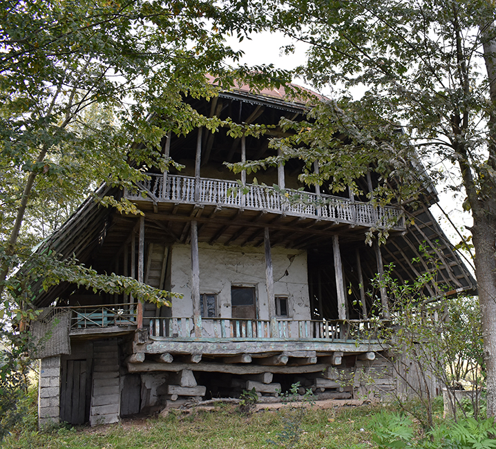
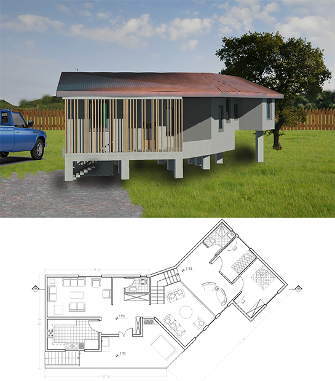
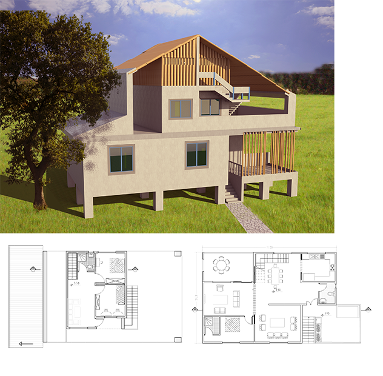

For this project in the semester befor we visited two village as a group to observe and learn about their
culture, architecture,jobs and etc.one village was in mountain area and the other one was in flat area.
for design part we start our work indiviualy.I chose to work on flat one which was called 'Koochakdeh'
▾


First step was to extract terms and conditions
of building from our observations and offer
some solutions for problems that we observed.
Seconde step was to design patterns for building
houses which fallow those terms and conditions
I offered three pattern fisrt one was for
small families(three people)
▾

Seconde pattern was for an extended family
I tried to use bamboo in my design because
this area has potential to grow bamboo
and the village near there was growing
bamboo too.
the last floor is used for storage in winter
it is used for place to cool in summer.
this space provide the opportunate
to extend the house.
▾